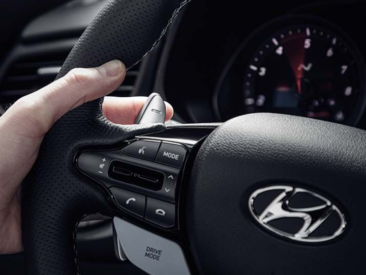
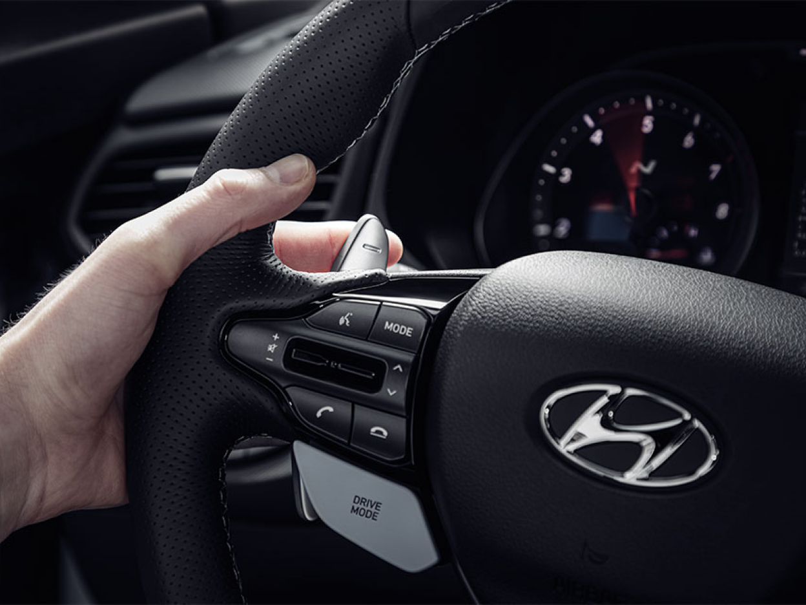
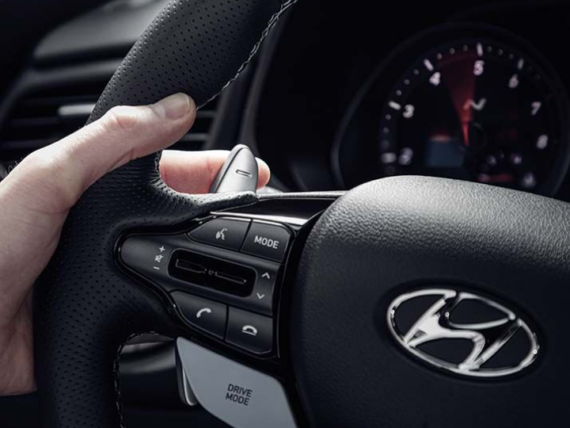
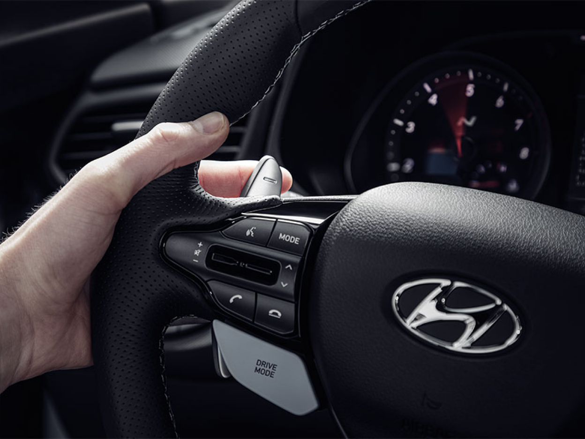
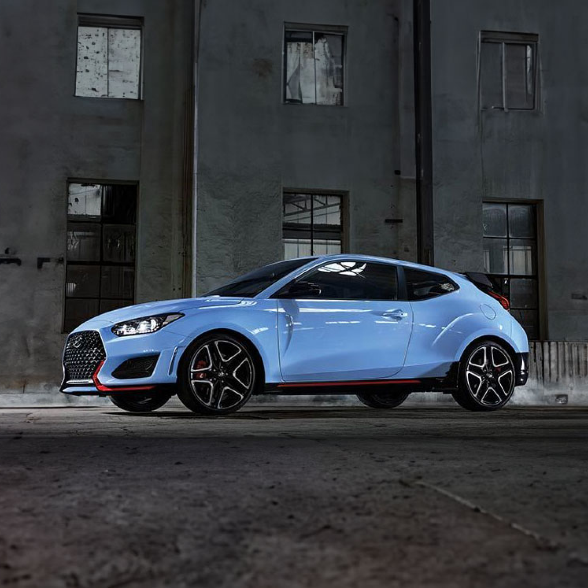
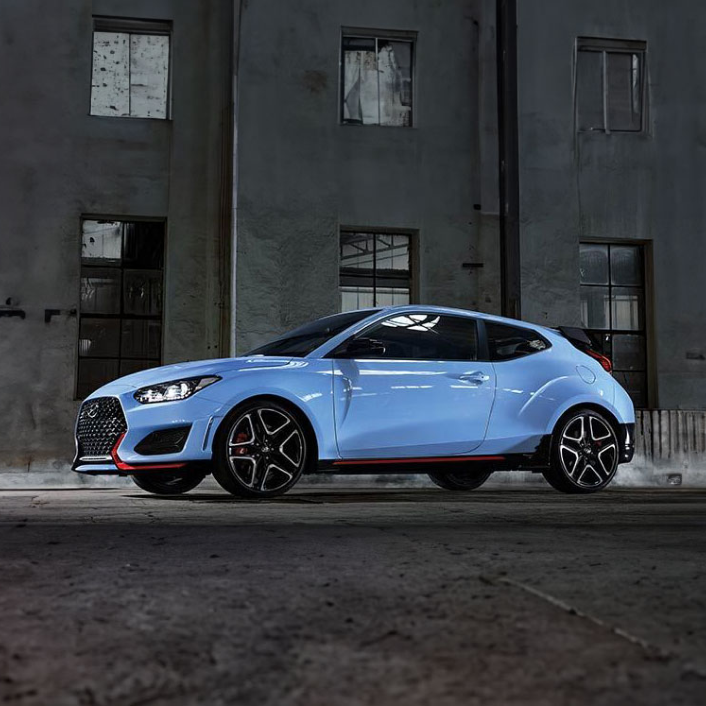

새로워진 벨로스터 N
순간을 바꾸다

Overview
순간을 바꾸다.
여러분의 일상을 바꿔보세요. 새로운 벨로스터 N과 함께하면 매일 아침 알람이 울리기 전에 잠에서 깨어나 일상 속 순간을 기대하게 합니다. 운전하는 모든 순간에 드라이빙의 즐거움을 느낄 수 있어 아이 같은 미소가 저절로 떠오르죠. 우리에게 진정으로 중요한 것은 목적지가 아니라 여정입니다.


Performance
새로워진 벨로스터 N
N 8단 습식 듀얼 클러치 변속기를 통해 고성능 코너링 악동의 또 다른 면모를 발견할 수 있습니다. 스티어링 휠 뒤에 새롭게 장착된 패들 시프터를 손끝으로 눌러 언제 어디서나 원하는 순간에 변속할 수 있습니다.
코너링 악동
현대자동차는 WRC, TCR 등 모터스포츠에 대한 경험과 지식을 바탕으로 트랙과 도로용 고성능 모델인 벨로스터 N을 탄생시켰습니다. 일상적인 스포츠카의 느낌과 레이싱 트랙 성능에 더해진 놀라운 코너링 능력으로, '코너링 악동'이라는 별명이 붙었습니다.


N 8단 습식 듀얼 클러치 변속기
N DCT는 2개의 클러치를 분리한 자동 수동변속기로 효율성, 변속감, 운전 편의성을 높였습니다. 습식 클러치 시스템은 더 나은 냉각 기능을 제공하고 높은 토크에 대처하며 간단한 기어 레버 배열로 인해 저단 변속으로 앞으로 밀고 고단 변속으로 당길 수 있습니다. 즐거움을 강화하는 고성능 로직을 통해 드라이브를 완벽하게 제어할 수 있습니다.

 



 

N 파워 시프트
뒤에서 힘있게 밀어주는 동력으로, 앞좌석에서 즐거움을 느낄 수 있습니다. N 파워 시프트(NPS)를 사용하면 DCT의 운전의 즐거움을 경험할 수 있습니다.
N 그린 시프트
N 그린 시프트(NGS, N Grin Shift) 버튼을 누르면 최대 성능을 경험할 수 있습니다. 엔진 오버부스트와 N DCT의 이상적인 변속 패턴을 활용하면 20초간 탁월한 성능 향상을 즐길 수 있습니다. 드라이브를 떠나보세요. 미소가 이어질 수밖에 없습니다.
N 트랙 센스 시프트
벨로스터 N은 운전자의 운전 방식을 감지하고 레이싱 중임을 인식하면 자동으로 N 트랙 센스 시프트(NTS)를 작동시킵니다. 트랙 주행 시 NTS가 최적의 성능을 위해 올바른 기어로 변속하므로 운전자는 스티어링에만 집중하여 운전을 즐길 수 있습니다.
Design
성능 최적화를 위한 디자인과 강렬한 레드 트림
벨로스터 N의 대담한 디자인으로 도심을 누비다
운전석에 몸을 맡기고 레이싱 트랙의 스릴에 몰입해 보세요.
N 라이트 스포츠 버킷 시트는 운전자에게 완벽한 착용감을 선사하며, 기어 변속과 스티어링 휠의 단단한 그립감은 뛰어난 제어력을 제공합니다.


Specification
새로워진
벨로스터 N 제원


- 엔진
- 2.0T GDi
- 변속기
- 수동 6단
- 출력 (PS)
- 250
- 최대 토크(kg-m)
- 36.0
- 최고 속도 (km/h)
- 250
- 엔진
- 2.0T GDi
- 변속기
- 수동 6단 또는 N DCT
- 출력 (PS)
- 275
- 최대 토크(kg-m)
- 40.0
- 최고 속도 (km/h)
- 250


Related

The all-new IONIQ 5 N

IONIQ 5 N 2024 World Performance Car Award Winner

Mastering Japanese tracks, one drift at